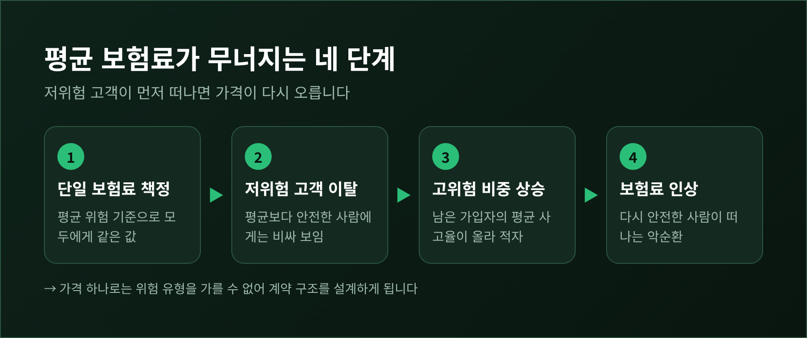
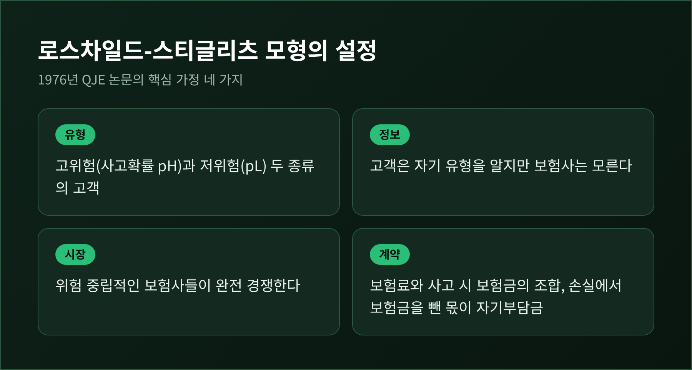
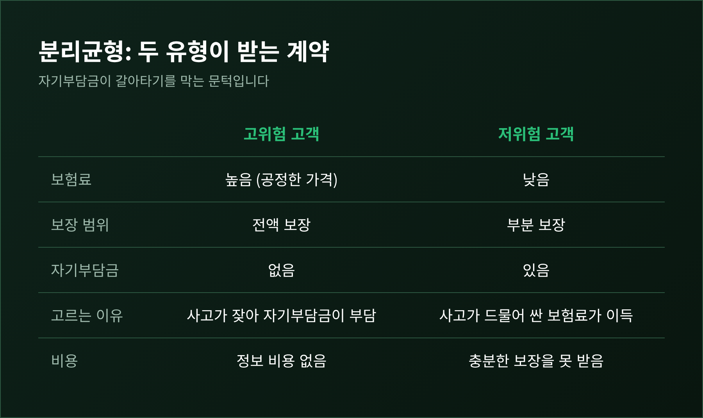
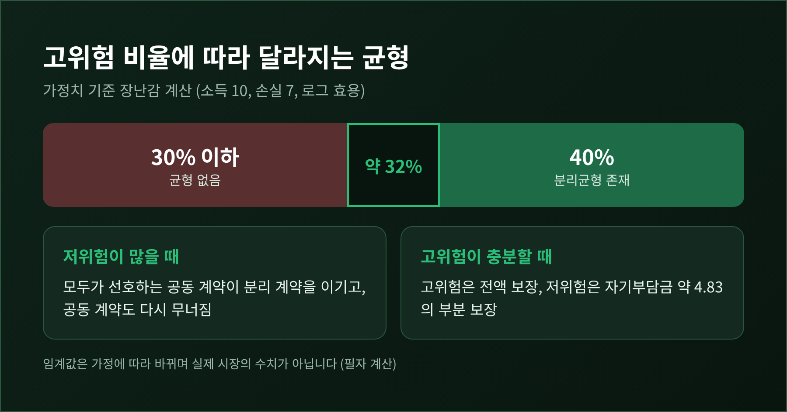
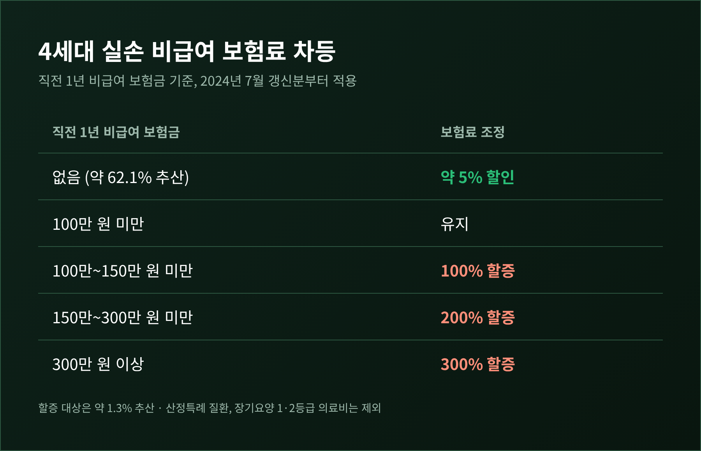
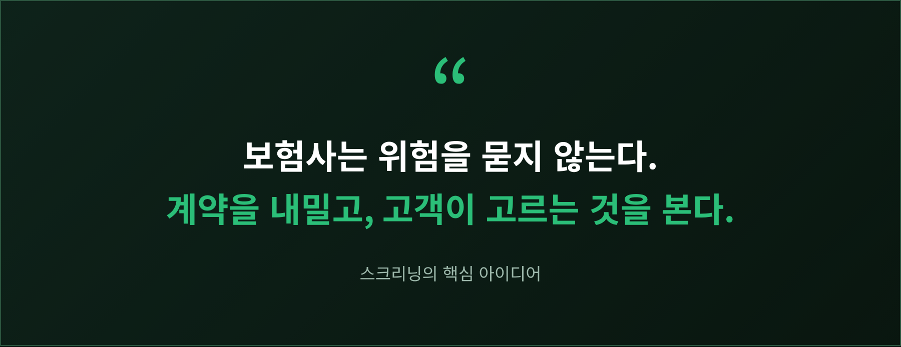

보험 역선택과 스크리닝 — 자기부담금은 어떻게 위험 유형을 가려낼까

로스차일드-스티글리츠 모형으로 읽는 보험 시장의 정보 비대칭
이번 글에서는 보험 시장의 역선택과 스크리닝을 정리해 보겠습니다. 보험사는 가입자의 진짜 위험을 모릅니다. 그래서 위험을 묻는 대신 선택지를 건네고, 고객이 무엇을 고르는지 보고 유형을 가려냅니다. 그 대표적인 장치가 자기부담금이며, 이를 수학으로 풀어낸 것이 로스차일드-스티글리츠 모형입니다.
세 줄로 먼저 요약해 둡니다.
- 평균 위험으로 값을 매긴 단일 보험은 저위험 고객이 먼저 떠나면서 무너집니다.
- 보험사는 "보험료는 싸고 자기부담금은 큰 계약"과 "비싸지만 전액 보장되는 계약"을 함께 내놓아 고객을 스스로 분류하게 합니다.
- 다만 이 균형은 조건이 맞아야 존재하고, 현실의 증거도 시장마다 엇갈립니다.
■ 보험은 왜 값을 매기기 어려운가
보험은 위험을 모아 나누는 장사입니다. 그런데 사고 가능성은 가입자 본인이 보험사보다 훨씬 잘 압니다. 2001년 노벨 경제학상 해설도 같은 지점을 짚습니다. 가입자는 자신의 사고 위험을 보험사보다 더 잘 안다는 것입니다.
이 비대칭이 만드는 문제가 역선택입니다. 사고 위험이 높다고 스스로 느끼는 사람일수록 보험에 더 적극적으로 가입합니다. 보험사가 평균 위험에 맞춰 보험료를 정하면, 평균보다 안전한 사람에게는 비싸 보이고 위험한 사람에게는 싸 보입니다.

예전에는 이 문제를 "그냥 가격을 올리면 된다"고 생각하기 쉬웠습니다. 지금의 시각은 다릅니다. 가격만으로는 사람을 가를 수 없으니, 계약의 구조 자체를 설계해야 한다는 것입니다. 노벨상 해설에서 스티글리츠의 몫으로 소개된 스크리닝, 곧 정보가 부족한 쪽이 계약 메뉴로 상대의 정보를 끌어내는 방법이 여기서 나옵니다.
■ 로스차일드-스티글리츠 모형의 설정
1976년 로스차일드와 스티글리츠는 『계간 경제학 저널』(QJE)에 경쟁적 보험 시장의 균형을 다룬 논문을 발표했습니다. 모형은 단순합니다.
- 고객은 위험을 싫어하고, 보험사는 위험 중립적이며 완전 경쟁합니다.
- 고객은 고위험(사고확률 pH)과 저위험(pL) 두 유형으로 나뉩니다.
- 고객은 자기 유형을 알지만, 보험사는 모릅니다.
- 계약은 보험료와 사고 시 보험금의 조합이며, 손실에서 보험금을 뺀 금액이 자기부담금입니다.
기준점은 정보가 완전한 세계입니다. 이때는 각자 자기 위험에 맞는 공정한 보험료로 전액 보장을 받습니다. 자기부담금은 0입니다. 정보 비대칭은 이 이상적 결과를 깨뜨립니다.
■ 공동균형은 왜 성립하지 못하는가
모든 고객이 같은 계약을 사는 상태를 공동균형이라 부릅니다. 가장 자연스러운 후보는 평균 위험으로 값을 매긴 전액 보장 상품입니다. 평균적으로는 손익분기를 맞춥니다.
하지만 경쟁 보험사가 이 틈을 노립니다. 보험료는 더 싸고 보장은 조금 줄인 계약을 내놓는 것입니다. 저위험 고객은 이 계약을 선호하고, 고위험 고객은 보장이 줄어드는 것이 싫어서 따라오지 않습니다. 새 계약은 저위험만 골라 담아 이익을 냅니다. 이른바 크림 스키밍입니다.
저위험이 빠져나간 원래 계약에는 고위험만 남아 적자가 됩니다. 결국 공동균형은 어떤 모양이든 무너집니다. 이 결론이 모형의 출발점입니다.

■ 분리균형 — 계약 메뉴가 사람을 가르는 방식
공동균형이 안 된다면 남는 길은 분리균형입니다. 두 유형이 서로 다른 계약을 고르는 상태입니다.
- 고위험 고객은 공정한 가격의 전액 보장 계약을 받습니다.
- 저위험 고객은 보험료가 싼 대신 자기부담금이 있는 부분 보장 계약을 받습니다.
핵심은 저위험 계약의 설계에 있습니다. 보험료가 싸고 보장이 후한 계약을 내놓으면 고위험 고객도 갈아탈 것입니다. 그래서 보험사는 고위험이 갈아타지 않을 정도까지만 보장을 허용합니다. 자기부담금이 바로 그 문턱 역할을 합니다.
사고가 잦은 사람에게 자기부담금은 자주 치르는 비용입니다. 사고가 드문 사람에게는 가끔 치르는 비용입니다. 같은 자기부담금이라도 값어치가 다르게 느껴지고, 이 차이가 선택을 갈라놓습니다. 모형에서는 이를 고위험 쪽의 무차별곡선이 더 가팔라서 두 곡선이 한 번만 만난다고 표현합니다. 이름은 단일교차 조건입니다.

이 균형에는 대가가 따릅니다. 저위험 고객은 위험에 비해 충분한 보장을 사지 못합니다. 정보 비대칭이 만든 비효율이며, 자기 위험을 증명할 방법이 없는 저위험 고객이 치르는 몫입니다.
■ 숫자로 확인해 보기
감이 잡히도록 교과서에서 쓰는 가정치로 직접 계산해 보았습니다. 현실의 보험 상품 수치가 아니라 모형을 이해하기 위한 장난감 계산이라는 점을 밝혀 둡니다. 소득 10, 사고 손실 7, 효용은 로그 함수이고, 고위험의 사고확률은 50%, 저위험은 30%입니다.
- 고위험 고객은 보험료 3.5에 보험금 7을 받는 전액 보장 계약을 삽니다. 사고가 나도 안 나도 소득은 6.5입니다.
- 저위험 고객의 분리 계약은 보험금 약 2.17에 보험료 약 0.65입니다. 손실 7 가운데 약 4.83이 자기부담금으로 남습니다.
- 이 계약을 사도 고위험이 얻는 만족은 자기 전액 보장과 같아서 갈아탈 이유가 없습니다.
저위험 고객의 만족도 역시 정보가 완전했을 때의 전액 보장보다 낮아집니다. 자기부담금이 4.83이나 되는 것은 고위험이 따라 들어오지 못하게 막는 장치이기 때문입니다.
■ 균형이 아예 없을 수도 있습니다
이 분리균형은 언제나 존재하지 않습니다. 저위험 고객이 시장의 대부분이면 이야기가 달라집니다. 모두가 선호하는 공동 계약이 생겨 분리 계약 쌍을 이기고, 그 공동 계약도 다시 무너져 어떤 계약도 안정적이지 못한 상태가 됩니다. 존재하려면 고위험의 비율이 충분히 커야 합니다.
위의 가정치로 계산하면 고위험 비율이 약 32%를 넘을 때 분리균형이 존재했습니다. 40%에서는 존재하고, 30% 이하에서는 존재하지 않았습니다. 이 임계값은 가정에 따라 바뀌는 숫자이므로, 정확한 값보다 "비율에 달려 있다"는 구조를 기억하시면 됩니다.

경제학자들은 이 문제를 여러 방식으로 풀었습니다. 윌슨은 1977년에 "수익이 사라진 계약은 즉시 거둬들인다"고 보험사들이 예상한다고 가정했습니다. 이러면 크림 스키밍 이탈이 이익이 되지 않아 공동균형이 가능해집니다. 미야자키와 스펜스는 계약 메뉴를 허용해, 저위험이 고위험을 일부 보조하는 분리균형을 도출했습니다. 이른바 2차 최선의 효율 배분입니다. 어느 이론이 현실에 더 맞는지는 아직 열린 문제라고 합니다.
■ 현실의 증거는 시장마다 다릅니다
이론이 아름답다고 현실도 그렇지는 않습니다. 실증 연구들은 보장 수준과 사후 위험의 양의 상관관계를 살핍니다. 보장이 후한 사람이 실제로 사고도 많다면 역선택의 신호로 읽는 것입니다. 한계도 있습니다. 보험에 들어서 조심성이 줄어드는 도덕적 해이도 같은 패턴을 만들기 때문에 둘을 구분하기 어렵습니다.
코헨과 시겔먼의 서베이에 따르면 결과는 보험 종류마다 갈립니다.
- 연금: 검토된 연구가 모두 선택 효과를 확인했습니다. 연금 가입자가 더 오래 사는 경향입니다.
- 생명보험: 대체로 그런 선택 효과가 없고, 오히려 가입자의 사망률이 낮은 경우도 있습니다. 서베이는 연금과의 대비를 퍼즐로 평가합니다.
- 자동차보험: 프랑스의 초보 운전자에서는 상관이 없었고, 이스라엘에서는 경력이 3년을 넘은 운전자에게서 상당한 상관이 나타났습니다.
위험뿐 아니라 위험을 싫어하는 정도도 가입자의 사적 정보입니다. 조심스러운 사람이 보험도 많이 사면 위험 기반의 선택이 상쇄되어 보입니다. 이 때문에 "역선택은 어디에나 있다"고 단정할 수는 없습니다.
한국의 자동차보험을 분석한 김용덕·김경환(2009)의 연구도 비슷합니다. 전위험담보를 종속변수로 보면 역선택이 나타났지만 자기부담금으로 보면 나타나지 않았습니다. 같은 시장에서도 어떤 계약 조건을 보느냐에 따라 결론이 달라진다는 뜻입니다.
한편 아이나브와 핀켈스타인은 선택이 존재한다는 사실과 사회적 손실이 크다는 사실은 별개라고 짚습니다. 평균비용이 수요곡선보다 높아 아무도 가입하지 않는 붕괴가 극단적 경우이고, 비용 격차가 같아도 후생 손실은 다를 수 있습니다.
■ 한국 사례 — 4세대 실손보험의 차등 설계
국내에서 이 논의를 가장 가까이 보여주는 사례가 실손의료보험입니다. 2020년 당시 가입자는 약 3,800만 명이었습니다. 2018년에는 이용량 상위 10%가 보험금의 56.8%를 받았고, 가입자의 93.2%는 평균 이하의 보험금을 받았습니다. 일부 과다 이용이 전체 보험료를 끌어올리는 구조였습니다.
2021년에 나온 4세대 실손은 두 가지를 바꿨습니다. 먼저 자기부담률을 올렸습니다. 급여는 10~20%에서 20%로, 비급여는 20~30%에서 30%로 조정했습니다. 다음으로 비급여를 특약으로 떼어내 이용량에 따라 보험료를 차등하기로 했습니다.

차등제는 출시 3년 뒤인 2024년 7월 1일부터 갱신 시 적용되었습니다. 직전 1년 비급여 보험금이 없으면 약 5% 할인, 100만 원 미만이면 유지, 그 이상은 100%에서 300%까지 할증입니다. 보도에 따르면 무청구 1등급이 약 62.1%, 할증 대상이 약 1.3%로 추산되었습니다. 2020년에 처음 발표했을 때의 추정치는 1.8%였으므로 추정치가 시점마다 달랐던 점은 알아 두시길 바랍니다. 산정특례 질환과 장기요양 1·2등급의 의료비는 제외됩니다.
이것을 로스차일드-스티글리츠식 스크리닝이라고 부르기는 어렵습니다. 모형은 가입하는 순간에 고객이 메뉴에서 고르는 행동으로 유형을 가릅니다. 실손의 차등제는 가입 후 실제 이용한 이력으로 가격을 조정하는 사후 경험요율에 가깝습니다. 불임 관련 보장을 가입 2년 후부터 하는 것처럼 대기기간을 두어 역선택을 막으려는 장치도 함께 쓰였습니다.
효과는 아직 말하기 이릅니다. 이번 조사에서는 차등제가 과잉 이용과 위험 편중을 얼마나 줄였는지 보여주는 실증 자료를 확인하지 못했습니다. 자기부담금을 높이고 이용 이력을 가격에 반영하는 방향이 이론의 문제의식과 맞닿아 있다는 정도로 읽어 주시기 바랍니다.
정리하면 이렇습니다.
보험 시장에서 정보 비대칭은 값을 올려서 풀 문제가 아니라 계약을 설계해서 다룰 문제입니다. 자기부담금은 고객이 자기 위험을 스스로 알리게 만드는 질문이고, 보험료 차등은 그 답을 이력으로 확인하는 장치입니다.

다만 이 질서는 완전하지 않습니다. 균형이 없을 수 있고, 시장에 따라 선택 효과의 증거가 없기도 합니다. 저위험 고객은 늘 얼마간의 손해를 감수합니다. 다음에 보험 증권을 열어 자기부담금 항목을 보실 일이 있다면, 그 숫자가 누구를 가려내려고 놓인 문턱인지 한 번쯤 생각해 보시면 좋겠습니다.